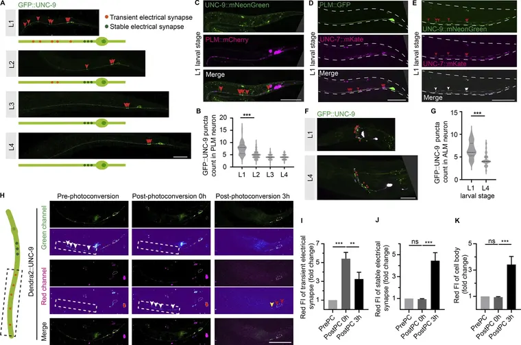

Destacado
The Journal of cell biology ·
Developmental elimination of electrical synapses by UNC-51/UNC-76-mediated vesicular transport. Hueco: Títulos: traducción del título pendiente (la hace el LLM, paso 16).
- Revisión: Revista (provisional: Texto provisional: «publicado en revista» no prueba la revisión por pares. El nombre de esta señal lo decide Sofía.)
- Sujetos: Animales
- Avisos: Sin avisos
✓ Resumen verificado Investigadores que estudian las neuronas sensoriales del nematodo C. elegans descubrieron que las sinapsis eléctricas, que son conexiones físicas directas entre células, están presentes temporalmente en las primeras etapas de la vida antes de ser eliminadas a medida que el sistema nervioso madura. Hueco: Los resúmenes verificados son los de S5 (estudios del 2 al 8 de noviembre); la cadena nueva aún no se ha ejecutado.